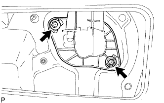

BỘ LÀM MÁT PHÍA SAU > LẮP |
| 1. LẮP BỘ LÀM MÁT PHÍA SAU |
Lắp bộ làm mát bằng 3 bu lông.
| 2. LẮP CỤM ĐƯỜNG ỐNG VÀ PHỤ KIỆN CỦA ĐIỀU HOÀ NO.2 |
Bôi trơ dầu máy nén vào 2 gioăng chữ O mới. Hãy lắp 2 gioăng chữ O mới vào ống.
 |
Lắp ống bằng 2 bu lông.
| 3. LẮP NẮP BỘ LÀM MÁT NO.1 |
|  |
Lắp nắp bộ làm mát.
Lắp 2 bulông.
 |
Lắp hãm.
| 4. LẮP CỤM ỐNG THOÁT KHÍ TÁI XE SAU PHẢI |
Cài khớp 5 vấu và tháo ống dẫn khí.
| 5. LẮP NẮP BA ĐỜ XỐC TRƯỚC |
Hãy dán băng dính bảo vệ phía dưới tai xe sau.
w/ Hệ thống cảnh báo khoảng cách:
Nối 2 giắc nối.
Nhả khớp 12 vấu để lắp nắp ba đờ xốc.
 |
Lắp 8 vít và 4 kẹp.
| 6. LẮP ỐNG HÚT KHÍ BỘ LÀM MÁT NO.2 |
Lồng chốt của ống dẫn khí bộ làm mát phía sau vào lỗ lắp thân xe.
Tạm thời lắp bích nối của ống vào giá bắt đèn trần.
Lắp 11 kẹp vào ống dẫn khí.
| 7. LẮP ỐNG DẪN KHÍ BỘ LÀM MÁT NO.1 |
Lắp ống dẫn khí No.1 vào ống No.2
Lắp 7 kẹp vào ống dấn khí No.1.
| 8. LẮP ỐNG DẪN KHÍ BỘ LÀM MÁT NO.3 |
Lồng vào và ấn ống dẫn khí trụ xe lên trên vào ống dẫn khí trên trần.
Gắn phần dưới của ống dẫn khí vào bộ điều hoà.
Lắp 2 vít và rơle môtơ quạt gió.
| 9. LẮP CỤM ỐP TRẦN XE |
Lắp ốp trần xe. (Xem trang Kích chuột vào đây).
| 10. NỐI CÁP VÀO CỰC ÂM ẮC QUY |
| 11. TIẾN HÀNH THIẾT LẬP BAN ĐẦU |
Tiến hành thiết lập ban đầu (Xem trang Kích chuột vào đây).
| 12. NẠP GA ĐIỀU HOÀ |
Thực hiện hút chân không bằng bơm chân không.
Nạp ga điều hoà HFC-134a (R134a).

| 13. HÂM NÓNG ĐỘNG CƠ |
Sau khi nạp ga điều hoà, hãy hâm nóng động cơ tại tốc độ động cơ nhỏ hơn 2,000 vòng/phút trong 2 phút trở lên.
| 14. KIỂM TRA RÒ RỈ GA ĐIỀU HOÀ |
Sau khi nạp lại ga điều hoà, chuẩn bị xe để kiểm tra rò rỉ ga với các điều kiện sau đã được thoả mãn.
Tắt khoá điện OFF.
Xe đỗ ở vị trí thông khí tốt và không có khí dễ bay hơi, như hơi xăng hoặc khí xả. Bộ ngửi ga rất nhạy với các khí dễ bay hơi. Nếu phản ứng như trên là không thể tránh khỏi, thì phải kích xe lên.
Còn một ít ga điều hoà trong hệ thống.
Khi tắt máy nén OFF: Xấp xỉ 392 đến 588 kPa (4 đến 6 kgf/cm2).
Kiểm tra rò rỉ ga điều hoà đường ống dẫn ga.
Sau khi môtơ quạt gió ngừng quay, hãy đợi ít nhất 15 phút.
Dùng bộ phát hiện rò rỉ ga, kiểm tra rằng không có rò rỉ trong đường ống điều hoa.
Nếu thấy rò rỉ, hãy xiết chặt các chi tiết hoặc thay các chi tiết bị hỏng cần phải bịt rò rỉ.
 |
Kiểm tra rò rỉ ga điều hoà ở ống xả.
Cầm bộ ngửi rò ga sao cho cảm biến ở phía dưới ống xả như được chỉ ra như trong hình vẽ.
Kiểm tra rằng ga không bị rò ra từ ống xả.
Nếu thấy rò rỉ, hãy xiết chặt các chi tiết hoặc thay các chi tiết bị hỏng cần phải bịt rò rỉ.
Kiểm tra rò rỉ ga điều hoà ở bộ làm mát.
Tháo điều khiển môtơ quạt làm mát ra khỏi bộ làm mát. Hãy cắm cảm biến của bộ ngửi rò ga vào bộ phận.
Kiểm tra rằng khí không rò ra từ bộ làm mát.
Nếu thấy rò rỉ, hãy xiết chặt các chi tiết hoặc thay các chi tiết bị hỏng cần phải bịt rò rỉ.
Kiểm tra rò rỉ ga điều hoà ở công tắc áp suất.
Ngắt giắc công tắc áp suất ra và đợi xấp xỉ 20 phút.
Dùng bộ phát hiện rò rỉ ga, kiểm tra rằng không có rò rỉ từ công tắc áp suất.
Nếu thấy rò rỉ, hãy xiết chặt các chi tiết hoặc thay các chi tiết bị hỏng cần phải bịt rò rỉ.
Lặp lại tất cả các bước trên 2 hoặc 3 lần.